来源：https://vow6kdbiak.feishu.cn/docx/KPtEddKNLoWWMax8ZBFcOo9NnGb
本文档由阿甜独立完成！链接本人可点头像
爆文是经过市场验证，有广大用户赞同的，这就是趋势！
先别想着自己原创：
1、自媒体基础、文案基础、爆文感知不足
2、达芬奇也是从鸡蛋画起，先有再优
3、先了解什么是爆款，总结爆款的规律！
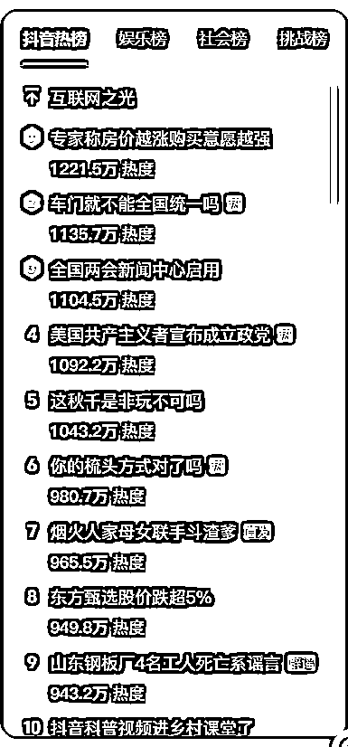
热点每个小时都会换，跟你能跟的话题！
确定你的账号主题，找你能模仿的账号
0粉找5w以下开始，找他们点赞高的内容
百万粉发了10w的内容也不用去跟！
听别人都在说抄文案、跟爆款！可是发现抄都不会抄！抄作业也要找作业好的！
在每天刷的内容里就是我们要找的爆款内容，如果不火基本不会刷到！所以这就是为什么刷到都很多点赞很多粉丝，因为小账号很难出现在大众视野！所以也不要焦虑！百万博主也是从0开始的！而且很多博主火，不是因为自媒体，而是没有自媒体的时候他能力相对比较强，自媒体只是放大器！我们要做的不是一口吃成大胖子，而是打好基础，选好赛道！
我们爆款在抖音和小红书选择已经足够！
需要的是找内容的方法平时的积累，积少成多，从无到有！形成自己的体系！
https://trendinsight.oceanengine.com/arithmetic-index
热点和你的内容强相关，如果不相关不要硬放，意义不大
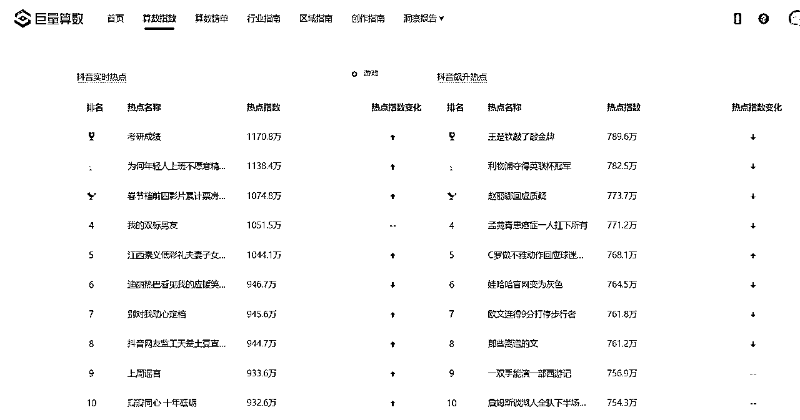
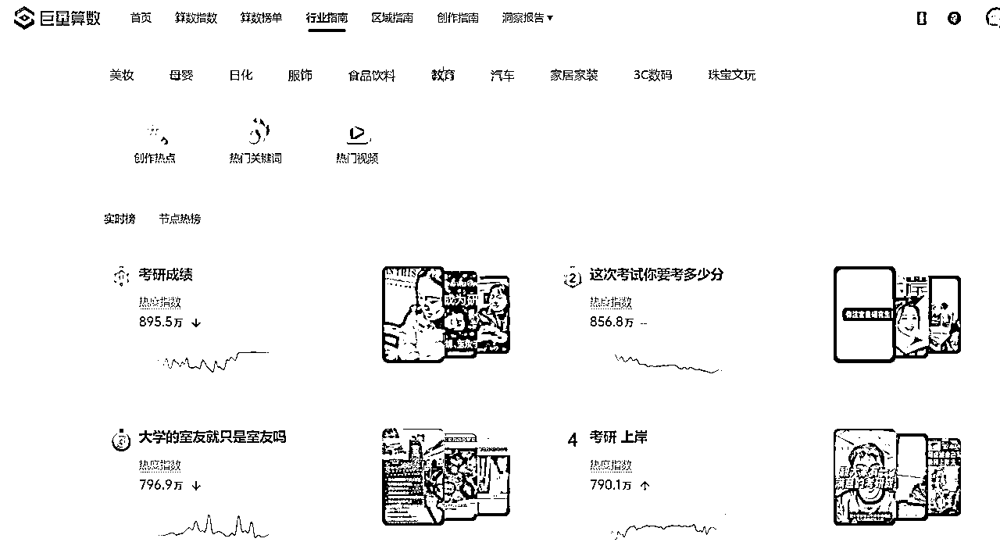
如果纠结于不知道选择什么内容，看创作指南【垂直领域】，再看热门关键词选择话题！
爆款有爆款的原因！爆款话题是人群情感、是需求、是情感共鸣！
二次元、鬼畜、种花、认知思维，你选什么？
赚钱、英语、情感、职场，都是热门话题，你选择什么？
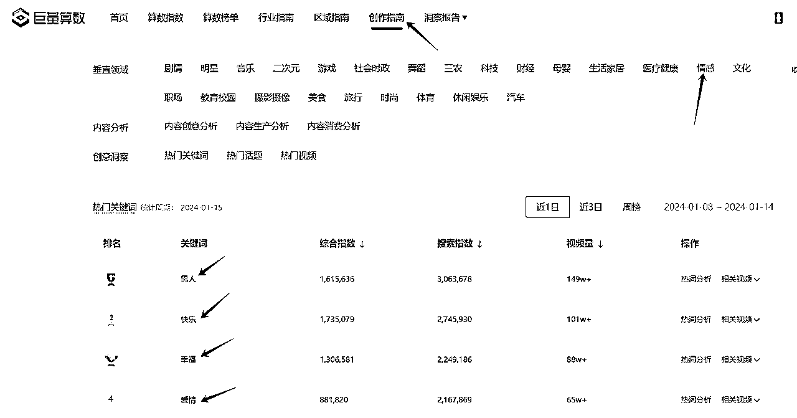
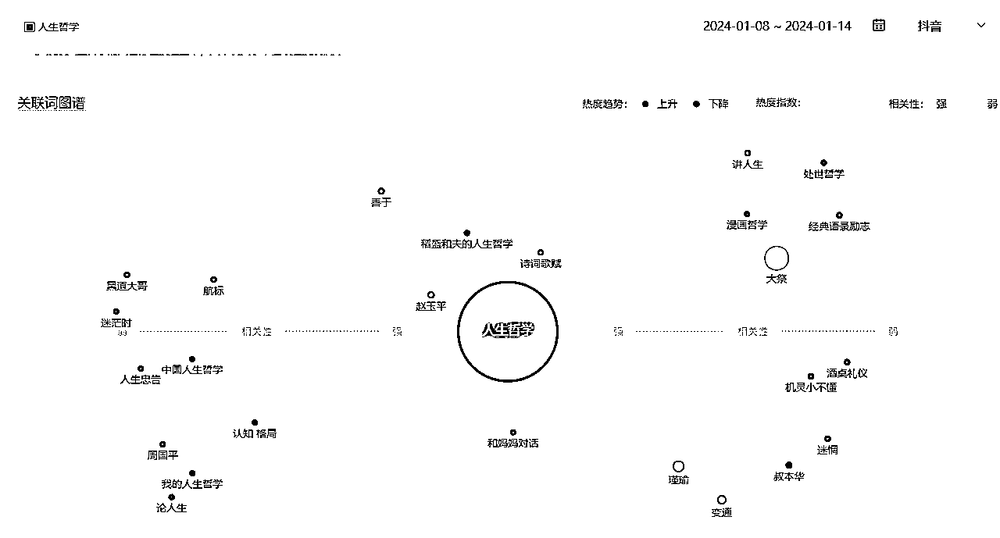
选择你想要做的话题，以“女性成长”为例
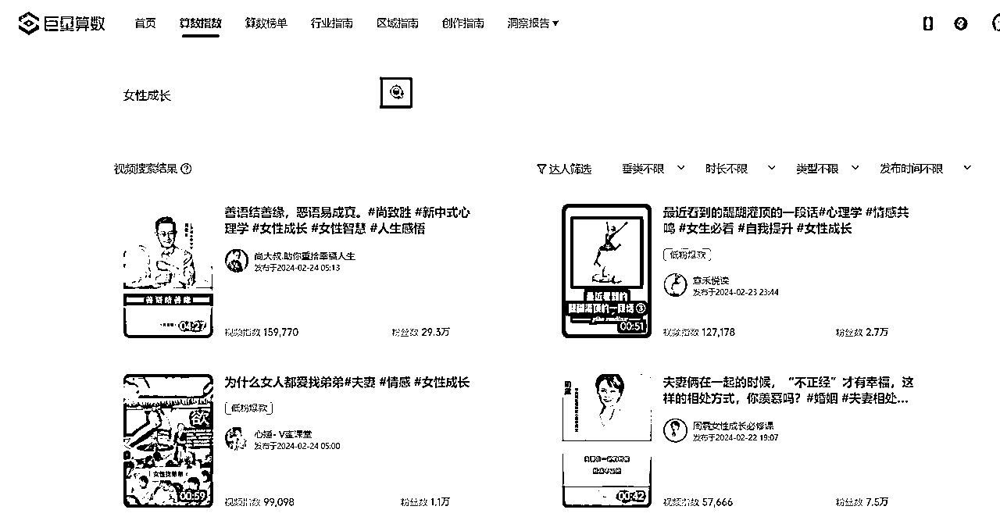
在时长选择15-60s
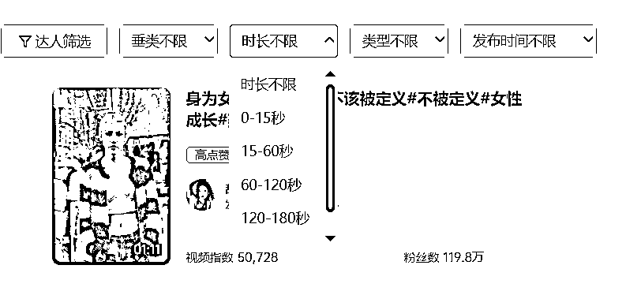
选择“低粉爆款”比较有参考意义，因为大博主发什么话题都有粉丝和流量加持！
在低粉爆款中选择符合自己账号内容相符的！
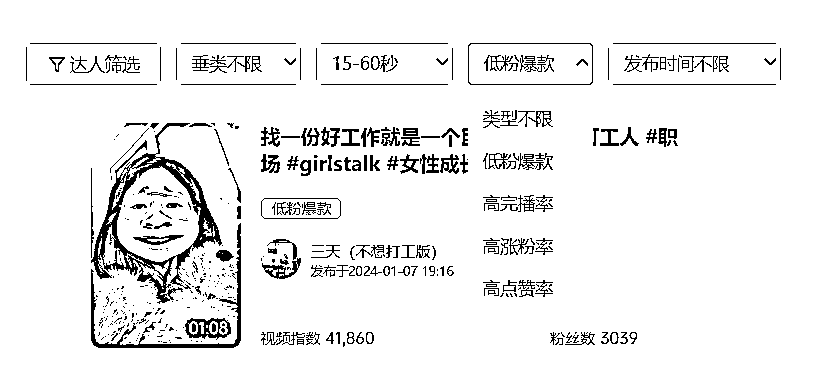
https://douhot.douyin.com/welcome
看和你账号相似的内容有哪些热点能关联，能蹭的！
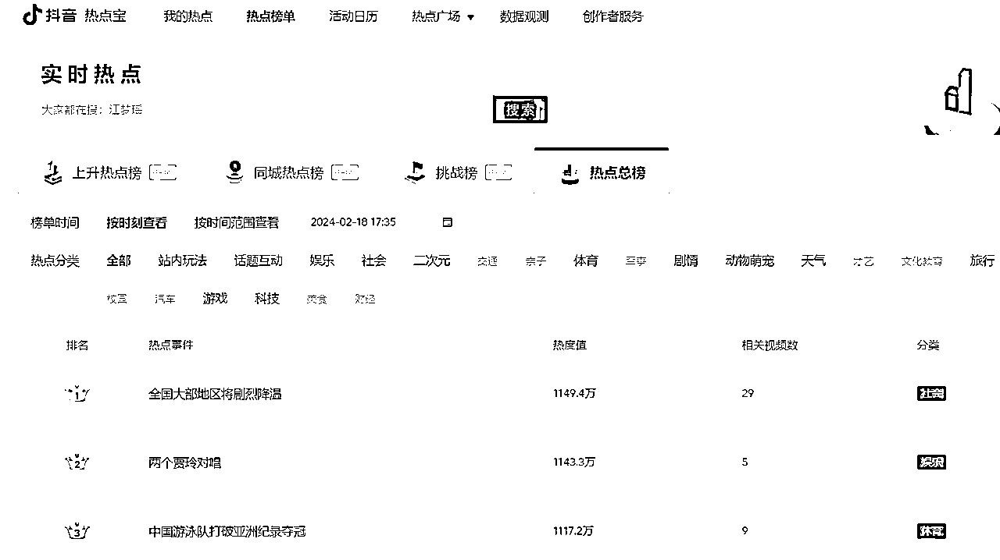
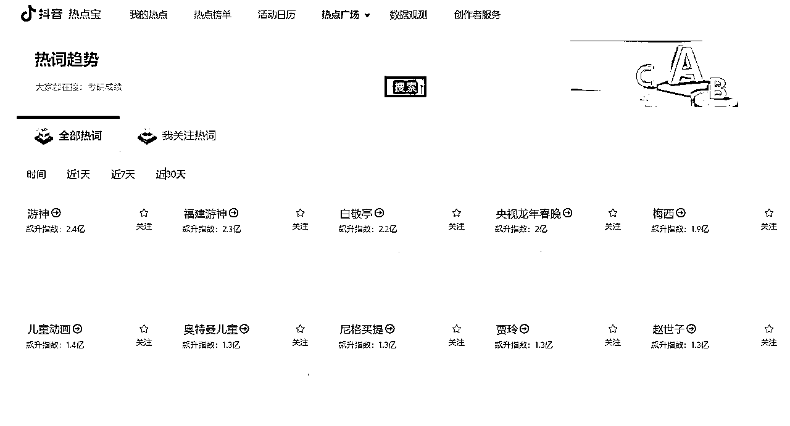
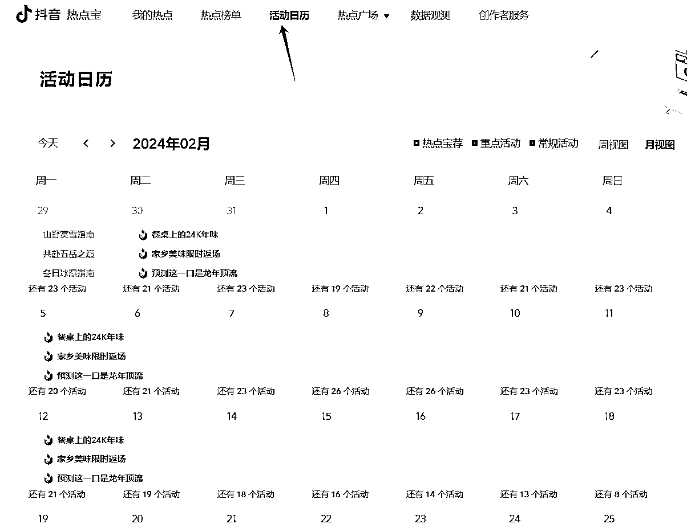
基础流量小，撬动账号，拉升，从无到有的从坏到好的流量数据，连续找对标账号的爆款文案，发了几条作品，第几条起来的，爆起来的那条，这叫做冷启动作品！
对标账号的冷启动作品就能作为我们发布的前几条作品。我们在做账号的时候最担心的就是前三条不知道如何发，或者说第一条怎么发，我们可以参考别人的冷启动作品，下载文案，保持第一句话不变，用AI软件修改文案后搬到自己账号作为开头！虽然我们发不会成为爆款，因为人物不同、剪辑方式不同、时效性不同，但是也大有概率不会太差！有一个正反馈！
https://kimi.moonshot.cn/（AI改稿实操演示，不用魔法）
在前几条发布后已经有基础流量，那日常的文案我们应该如何找，找哪些话题比较好呢？
在这里和大家说说：9 宫格选题法，在页面中随意滑动，选择框到内容里流量最大的视频！
比如下面三个不同账号内容，第一个就选择2602赞的内容（第二排最右）；第二个选择8368的内容（第一列第三个）；第三个也是这样选择点赞最多的！
等自己发了15条（10-20）内容后，选择自己点赞最多的文案内容，再让AI改写自己的文案，接着再发，直到没有流量（播放不破200）！这就能保证账号能快速跑起来！
例如：【女性】是关键词，后面的灰色是seo搜索词（长尾词）
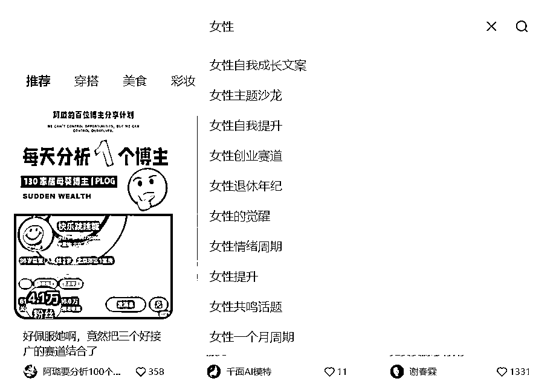
搜索出的结果，看点赞数量选择！
https://www.xiaohongshu.com/（小红书网页版）
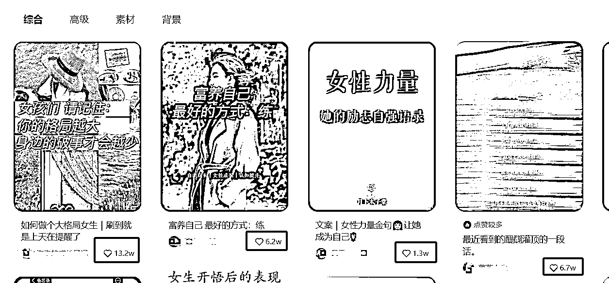
不是所有的爆款都适合作为视频内容！
打开第一个举例 http://xhslink.com/hPJ2eC：这些都是单独的句子，直接使用不太适合作为口播文案
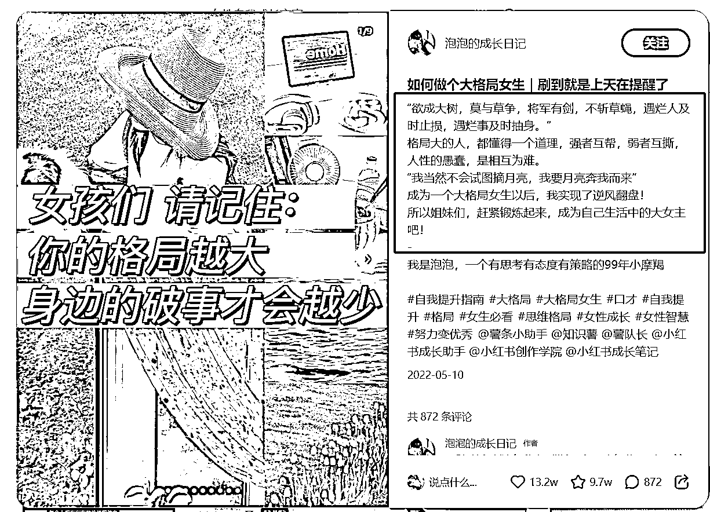
1、如果实在不合适，放弃
2、用kimichat组合文案！https://kimi.moonshot.cn/
注意用提问方式和组合，再根据你的内容进行微调，得到新的文案！
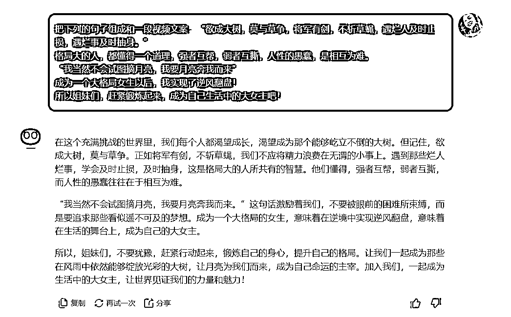